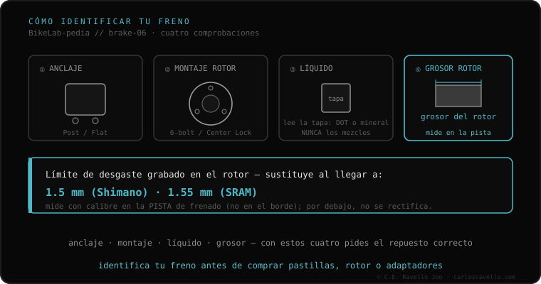

Seu freio de disco se define por quatro coisas. Um, a fixação da pinça: Post Mount (postes a 74 mm, montanha) ou Flat Mount (34 mm, estrada/gravel). Dois, como o rotor monta no cubo: 6 parafusos (BCD 44 mm) ou Center Lock (estriado + lockring a 40 N·m). Três, o fluido: DOT (glicol) ou óleo mineral, que não se misturam nunca. Quatro, o tamanho do rotor (140 a 220 mm). Com essas quatro respostas você sabe exatamente que peça encaixa.
O freio é onde mais a galera se confunde ao comprar pastilhas, rotores ou adaptadores. O atalho: identifique em quatro dados e não erra de novo.
Olhe a pinça: se se parafusa a dois postes salientes, é Post Mount (74 mm, montanha); se vai plana aparafusada por baixo, é Flat Mount (34 mm, estrada/gravel). Olhe o rotor: se tem 6 parafusos Torx é 6 parafusos; se tem estrias e um anel central é Center Lock. Olhe a tampa do reservatório: diz «DOT» ou «Mineral» —e nunca se misturam—. E meça o diâmetro do rotor. Esses quatro dados definem toda a compatibilidade.

A pinça entra se a sua fixação coincide com o seu quadro/garfo (Post ou Flat, com o adaptador correto). O rotor entra se a sua montagem coincide com o seu cubo (6 parafusos ou Center Lock). O fluido deve ser o que o seu freio indica: colocar DOT num freio mineral (ou o contrário) destrói os retentores. Antes de comprar, confirme os quatro dados.
Se você não sabe qual fixação, rotor ou fluido usa o seu freio, mande o caso. Diagnóstico real, sem te vender nada. Fale conosco no WhatsApp
Olhe a pinça: se se parafusa a dois postes salientes do quadro/garfo, é Post Mount (74 mm, montanha). Se vai plana, aparafusada por baixo, é Flat Mount (34 mm, estrada/gravel).
Diz na tampa do reservatório ou no manual: «DOT» (SRAM, Hayes, Hope) ou «Mineral» (Shimano, Magura, Tektro). Nunca se misturam nem se intercambiam.
Pela montagem no seu cubo (6 parafusos ou Center Lock) e o tamanho que o seu quadro/garfo aceita. Para subir de tamanho você precisa de um adaptador de pinça.
© 2026 BikeLab Studio. Conteúdo sob CC BY 4.0: você pode copiar, traduzir e publicar, inclusive com fins comerciais. A citação é obrigatória. Sem atribuição, a licença é revogada automaticamente (CC BY 4.0, §6.a) e o uso passa a ser violação de direitos autorais: solicitamos a retirada do conteúdo e sua desindexação. · Design e propriedade: Carlos Ravello Joo